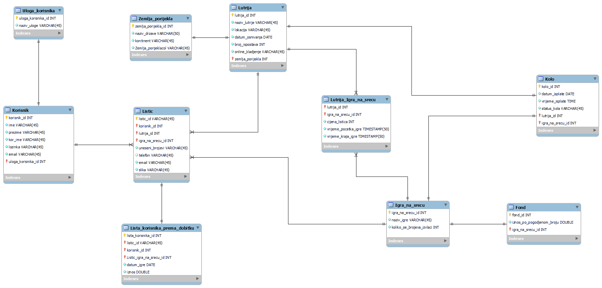
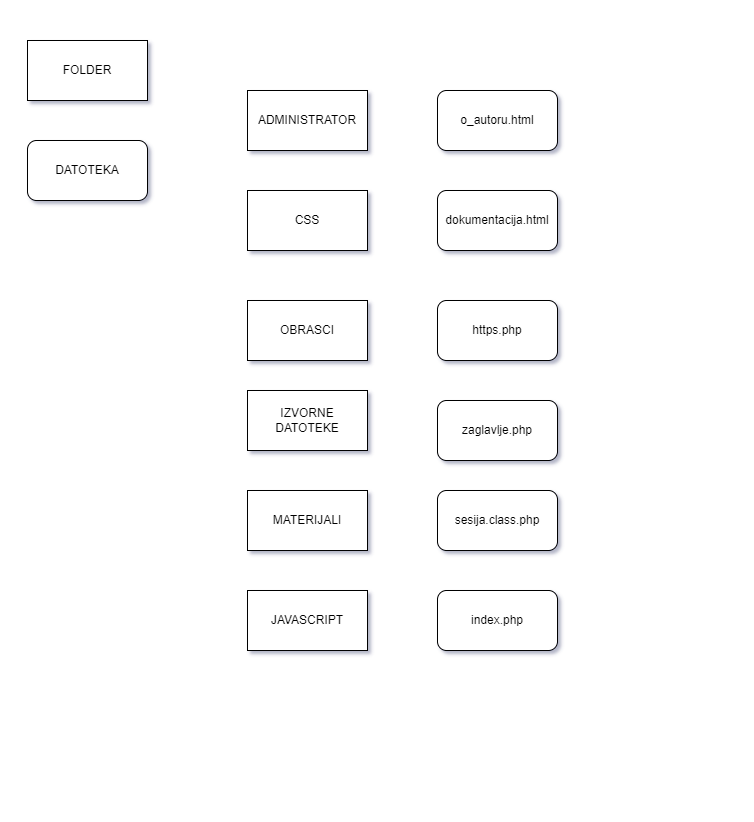
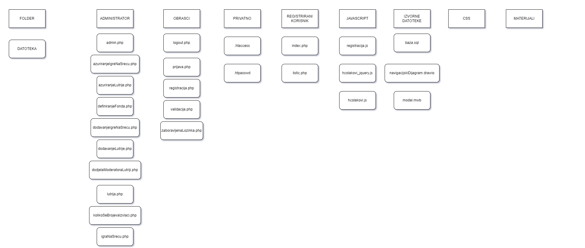

Igra na sreću
Hasan ČolakovićIgra na sreću je sustav koji služi za kreiranje, upravljenje i isplatu dobitaka igara na sreću. Igrom na sreću smatra se igra u kojoj se za uplatu određenog iznosa sudionicima pruža mogućnost stjecanja dobitka u novcu, stvarima, uslugama ili pravima, pri čemu dobitak ili gubitak ovisi pretežito o slučaju ili nekom drugom neizvjesnom događaju. Sustav ima 4 uloge, a to su: neregistrirani korisnik, registrirani korisnik, moderator, te administrator. Neregistrirani korisnik ima mogućnost pregleda rang liste korisnika prema isplaćenim dobicima određene igre na sreću i određenom vremenskom razdobolju. Osim toga, on ima mogućnost pregleda galerije u kojoj se nalaze ispunjeni listići igara na sreću koja su sortirana po kolu ili ukupnom fondu uplaćenih listića. Nakon neregistriranog korisnika, registrirani korisnik ima sve mogućnosti kao i neregistrirani korisnik, ali i neke dodatne funkcionalnosti. Naime, registrirani korisnik može kreirati listiće za određenu igru na sreću. Prilikom kreiranja listića, potrebno je da odabere lutriju, igru na sreću iz odabrane lutrije, te postavlja sliku ispunjenog listića. Osim toga, omogućeni su mu određeni filteri, kao što je npr. da može vidjeti svoje uplaćene listiće grupirane po igri na sreću te kolu sa statusom, koji može biti dobitan, isplaćen ili pak nije dobitan. Nakon toga, moderator, koji ima sve mogućnosti kao i registrirani korisnik, ali i nekoliko stavki koje su isključivo vezani za rad sustava kao što je pridruživanje igara na sreću lutrijama kojima je dodijeljen. On za svaku igru definira cijenu listića, datum, vrijeme početka i vrijeme završetka igre na sreću. Također, određuje status kola, vidi zahtjeve za isplatom ukoliko je korisnik ostvario dobitak, statistiku učestalosti brojeva u svim igrama na sreću i slično. I na kraju, najvažnija uloga, uloga administratora. Administrator upravlja lutrijama, moderatorima te igrama na sreću ili skraćeno rečeno, ima mogućnost upravljanja cijelim sustavom.
Opis projektnog rješenja
Za izradu ovog projekta trebalo mi je otprilike 60h sati aktivnog rada (4,5) dana. Naravno, nije izrađen cijeli projekt nego nekoliko različitih funkcionalnosti. Naime, funkcionalnosti prijave i registracije su upotpunosti odrađeni. Nakon toga sam odlučio posvetiti pažnju izradi uloge administratora jer mi se činila zanimljivom. Za tu ulogu izradio sam funkcionalnosti blokiranja/odblokiranja svih korisnika, pregled svih lutrija i igara na sreću, njihovo ažuriranje, dodavanje. Osim toga, administrator je u mogućnosti dodijeliti moderatora određenoj lutriji, definirati fond dobitka po pogođenom broju, koliko se brojeva izvlači za određenu igru određene lutrije. Nakon naučenih osnovnih stvari o CRUD operacijama, krenuo sam sa izradom uloge registriranog korisnika. Za registriranog korisnika izradio sam mogućnost kreiranja listića sa dodatkom generatora za slučajne brojeve gdje korisnik unosi početni, završni broj te koliko brojeva želi dobiti. Na samom kraju želim reći da je izrada ovog projekta bila izazovna gdje se moglo naučiti mnogo toga. Žao mi je što nisam imao više vremena za izradu projekta jer sam siguran da bih implementirao još neke funkcionalnosti. Sve u svemu, stekao sam puno znanja te imao osjećaj kako radim na projektu od kojeg bi moglo biti koristi u budućnosti što je činilo da zaboravim na umor.
ERA model
Navigacijski dijagram 1 (ROOT)
Navigacijski dijagram 2
Korištene tehnologije i alati
Za izradu ovog projekta koristio sam Visual Studio Code, Google Chrome, CMD (Terminal), FileZillu. Što se tiče tehnologija, koristio sam HTML, CSS, JavaScript, JQuery, AJAX, JSON, PHP, MySQL, Apache server. Nisam koristio tuđe biblioteke/module prilikom izrade ovog projekta.